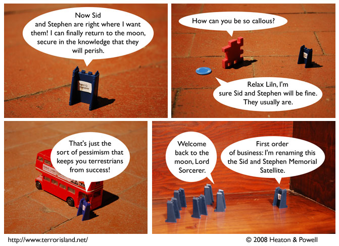

Strip #350
— Monday, September 9, 2008
Ned didn’t even bother learning their last names.
Notes, Thoughts, &c.
Ben’s Notes
See, not everyone is upset about Sid and Stephen being lost in the wilderness. For instance, I’m not, because they’re just fictional characters and I don’t particularly like them.
Lewis’s Notes
I’m not worried about them because logical fatalism has obviated any need to have concern about the future, after all, it is out of our control entirely.